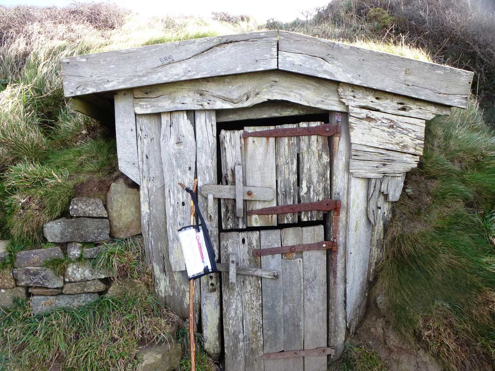
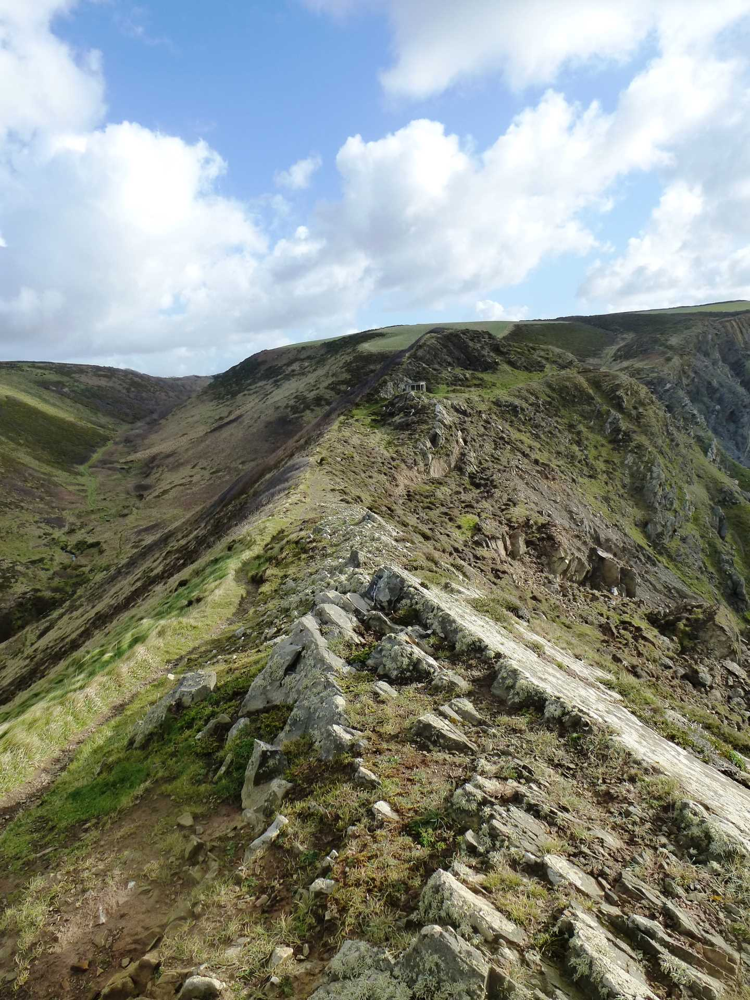

Start Ref: 206 152
End Ref: 206 152
Distance: 4 miles
Time: 2.5hrs
Our Start Point is the small parking area outside of the beautiful Morwenstow Church. Here, we are presented with a number of footpaths, but for today we are going to head North and down into the valley keeping the Church on our left and the Rectory on our right. At the bottom of the tree lined valley we are going to use the footbridge to cross the stream and then head up the opposite valley side until we come out of the trees and can follow the field to the West (left), entering another field and making our way to the coast. From here, we have a spectacular view of Morwenstow Church and the valley we have just walked through.
At the end of this steep sided field, we reach the Coastal Path and here we want to head South (left) and down the valley side as we head towards a little footbridge which takes us over the stream which we have already crossed once. As this stream flows over the cliff edge, it creates the first of the waterfalls that we see today.
We stick to the footpath as it again heads up the steep sides, passing St. Morwenna`s Well, and on up until the path flattens out again on Vicarage Cliffs. Midway through the second field, we pass a small sign directing us off to the right and the Hawker`s Hut, where we can stop and admire the view, fill in the visitors book (and maybe even go through the odd verse of Song Of The Western Men). It is wise to take a breather here, as we are about to traverse another valley as we head down to Tidna Shute (with another little footbridge) and the second of the waterfalls for today.
As we head up the far side we find on our right, the imposing and downright spectacular Higher Sharpnose Point, with an old lookout hut guarding its path as it juts out into the sea with its slab edges. Here I find, looking back, that there is no more exceptional point in Cornwall (my opinion).
After balancing our way back to the lookout, we are again going to head South (right, towards the Radio Station) keeping the coast on our right and strolling through a couple more fields. As we get to one gate, we are given the option of turning left through a kissing gate and following the path inland. This is our path for today as we now want to head towards Stanbury, which involves passing as many kissing gates in a short distance as I have ever come across (`ansom). The path finishes as the road starts, and we are going to follow this straight on towards the farm houses.
As the farm starts, there is a footpath to our left, which we are again going to take across two fields and suddenly find ourselves at the old settlement of Tonacombe. Here the path is a little confusing, but we want to go straight ahead into the trees and then back into two open fields. The second of these fields starts to head down hill as we approach the Tidna again. Just prior to the stream the path splits in three directions. Take the right hand branch and this will lead us to the final footbridge and then up our final steep hill.
As we near the top of the hill we find ourselves, quite literally, in a beer garden.
You may, like myself, my wife and our walking sticks, stop for a touch of refreshment here, before rejoining the road and following it to the left and then down the right hand branch as it leads us back the short distance to where we have left our car.
I hope that you have enjoyed this walk, and like myself, find it worth the drive.